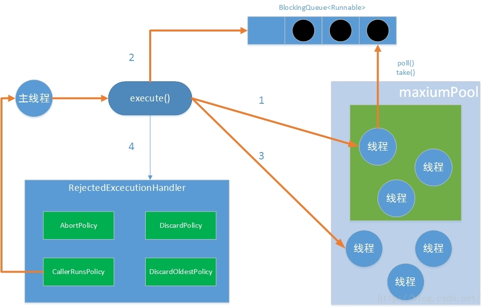
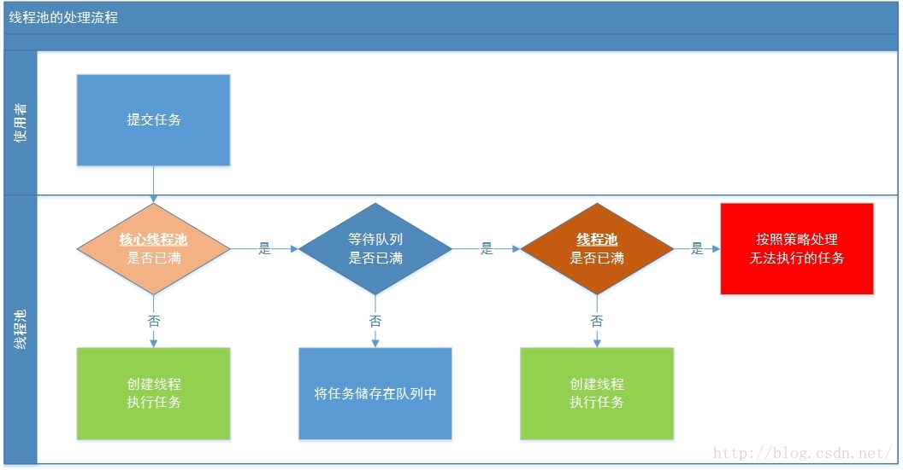

JAVA并发编程与高并发解决方案 - 并发编程 六
JAVA并发编程与高并发解决方案 - 并发编程 六
| 版本 | 作者 | 内容 |
|---|---|---|
| 2018.5.8 | chuIllusions | 线程池 |
线程池
在前面使用的例子用，我们已经使用过线程池，基本上就是初始化线程池实例之后，把任务丢进去，等待调度执行就可以了，使用起来非常简单、方便。虽然使用很简单，但线程池涉及到的知识点非常多。需要分析其实现。
JAVA中Thread这个类是线程类，在JAVA基础时，对于线程的认识是基于此类，为什么不使用Thread直接执行线程例子呢，而要使用线程池？可以试想，当并发数量很多，并且每个线程都是执行一个时间很短的任务就结束了，这样频繁创建线程就会大大降低系统的效率，因为频繁创建线程和销毁线程需要时间。而线程池可以达到这样的效果：线程可以复用，就是执行完一个任务，并不被销毁，而是可以继续执行其他的任务。
Thread的弊端：
- 每次
new Thread()新建对象，性能差； - 线程缺乏统一管理，可能无限制的新建线程，相互竞争，有可能占用过多系统资源导致死机或OOM；
- 缺少更多的功能，如更多执行、定期执行、线程中断；
线程池的好处
- 重用存在的线程，减少对象创建、消亡的开销，性能佳，降低资源消耗；
- 可有效控制最大并发线程数，提高系统资源利用率，同时可以避免过多资源竞争，避免阻塞，提高响应速度；
- 提供定时执行、定期执行、单线程、并发数控制等功能，以达到提高线程的可管理性。
阿里发布的 Java 开发手册中强制线程池不允许使用 Executors 去创建，而是通过 ThreadPoolExecutor 的方式，这样的处理方式让写的同学更加明确线程池的运行规则，规避资源耗尽的风险。
Executors利用工厂模式向我们提供了4种线程池实现方式，但是并不推荐使用，原因是使用Executors创建线程池不会传入相关参数而使用默认值所以我们常常忽略了那些重要的参数（线程池大小、缓冲队列的类型等），而且默认使用的参数会导致资源浪费，不可取。
ThreadPoolExecutor
Constructor And Parameters
java.uitl.concurrent.ThreadPoolExecutor 类是线程池中最核心的一个类，因此如果要透彻地了解Java中的线程池，必须先了解这个类，因此我们直接上源码：1
2
3
4
5
6
7
8
9
10
11
12
13
14
15
16
17
18
19
20
21
22
23
24
25
26
27
28
29
30
31
32
33public class ThreadPoolExecutor extends AbstractExecutorService {
/** 构造函数 1 */
public ThreadPoolExecutor(int corePoolSize,
int maximumPoolSize,
long keepAliveTime,
TimeUnit unit,
BlockingQueue<Runnable> workQueue) {}
/** 构造函数 2 */
public ThreadPoolExecutor(int corePoolSize,
int maximumPoolSize,
long keepAliveTime,
TimeUnit unit,
BlockingQueue<Runnable> workQueue,
ThreadFactory threadFactory) {}
/** 构造函数 3 */
public ThreadPoolExecutor(int corePoolSize,
int maximumPoolSize,
long keepAliveTime,
TimeUnit unit,
BlockingQueue<Runnable> workQueue,
RejectedExecutionHandler handler) {}
/** 构造函数 4 */
public ThreadPoolExecutor(int corePoolSize,
int maximumPoolSize,
long keepAliveTime,
TimeUnit unit,
BlockingQueue<Runnable> workQueue,
ThreadFactory threadFactory,
RejectedExecutionHandler handler) {}
}
ThreadPoolExecutor 类继承结构是： Executor(I) <- ExecutorService(I) <- AbstractExecutorService(C) <- TreadPoolExecutor
ThreadPoolExecutor类中提供了四个构造方法，在构造函数4中，参数最多，通过观察其他3个构造函数，发现前面三个构造器都是调用的第四个构造器进行的初始化工作。
构造器中各个参数的含义：
corePoolSize： 核心池的大小，这个参数跟后面讲述的线程池的实现原理有非常大的关系。在创建了线程池后，默认情况下，线程池中并没有任何线程，而是等待有任务到来才创建线程去执行任务，除非调用了预创建线程的方法，即在没有任务到来之前就创建 corePoolSize 个线程或者 一个线程：
prestartCoreThread(): 预创建一个核心线程，使其闲置等待工作。prestartAllCoreThreads(): 启动所有核心线程，导致它们空闲地等待工作。
默认情况下，在创建了线程池后，线程池中的线程数为0，当有任务来之后，就会创建一个线程去执行任务，当线程池中的线程数目达到corePoolSize后，就会把到达的任务放到缓存队列当中；
maximumPoolSize：线程池最大线程数，这个参数也是一个非常重要的参数，它表示在线程池中最多能创建多少个线程；
keepAliveTime：表示线程没有任务执行时最多保持多久时间会终止。默认情况下，只有当线程池中的线程数大于
corePoolSize时，keepAliveTime才会起作用，直到线程池中的线程数不大于corePoolSize，即当线程池中的线程数大于corePoolSize时，如果一个线程空闲的时间达到keepAliveTime，则会终止，直到线程池中的线程数不超过corePoolSize。但是如果调用了allowCoreThreadTimeOut(boolean)方法，在线程池中的线程数不大于corePoolSize时，keepAliveTime参数也会起作用，直到线程池中的线程数为0；unit：参数
keepAliveTime的时间单位，有7种取值，在TimeUnit类中有7种静态属性：TimeUnit.DAYS: 以 天 为单位 ；TimeUnit.HOURS: 以 小时 为单位 ；TimeUnit.MINUTES: 以 分钟 为单位 ；TimeUnit.SECONDS: 以 秒 为单位 ；TimeUnit.MILLISECONDS: 以 毫秒 为单位 ；TimeUnit.MICROSECONDS: 以 微秒 为单位 ；TimeUnit.NANOSECONDS: 以 纳秒 为单位 ；
workQueue： 一个阻塞队列，用来存储等待执行的任务，这个参数的选择也很重要，会对线程池的运行过程产生重大影响，一般来说，这里的阻塞队列有以下几种选择：
ArrayBlockingQueue：基于数组的先进先出队列，此队列创建时必须指定大小；LinkedBlockingQueue：基于链表的先进先出队列，如果创建时没有指定此队列大小，则默认为Integer.MAX_VALUE；SynchronousQueue：这个队列比较特殊，它不会保存提交的任务，而是将直接新建一个线程来执行新来的任务。
一般使用
LinkedBlockingQueue和SynchronousQueuethreadFactory：线程工厂，主要用来创建线程。 线程池最主要的一项工作，就是在满足某些条件的情况下创建线程。而在
ThreadPoolExecutor线程池中，创建线程的工作交给ThreadFactory来完成。要使用线程池，就必须要指定ThreadFactory。 如果我们使用的构造函数时并没有指定使用的ThreadFactory，这个时候ThreadPoolExecutor会使用一个默认的ThreadFactory：DefaultThreadFactory（这个类在Executors工具类中）;handler：在
ThreadPoolExecutor线程池中还有一个重要的接口：RejectedExecutionHandler。当提交给线程池的某一个新任务无法直接被线程池中“核心线程”直接处理，又无法加入等待队列，也无法创建新的线程执行；又或者线程池已经调用shutdown()方法停止了工作；又或者线程池不是处于正常的工作状态；这时候ThreadPoolExecutor线程池会拒绝处理这个任务，触发创建ThreadPoolExecutor线程池时定义的RejectedExecutionHandler接口的实现，表示当拒绝处理任务时的策略，有以下四种取值，四种值都为其静态内部类：
ThreadPoolExecutor.AbortPolicy：丢弃任务并抛出RejectedExecutionException异常。ThreadPoolExecutor.DiscardPolicy：也是丢弃任务，但是不抛出异常。ThreadPoolExecutor.DiscardOldestPolicy：丢弃队列最前面的任务，然后重新尝试执行新提交的任务。
Operating principle
介绍完上面的构造函数以及其参数之后，介绍一下ThreadPoolExecutor的运行原理，在网上浏览到一篇相关文章，因此将它直接引用过来
深入理解java线程池—ThreadPoolExecutor，以下内容引用此文章，并且增加了自己的一点理解
ThreadPoolExecutor.execute()
向线程池中提交一个不需要返回结果的任务
1 | public void execute(Runnable command) { |
从上面execute()方法中，出现了ctl，跟踪源码分析起作用：1
2
3
4
5
6
7
8
9
10
11
12
13//将整型的32位分为高3位和低29位，高3位表示线程池的状态,低29位表示活动的线程数
private final AtomicInteger ctl = new AtomicInteger(ctlOf(RUNNING, 0));
//获得高三位
private static final int COUNT_BITS = Integer.SIZE - 3;
//29位能表示的最大二进制整数，也就是活动线程数
private static final int CAPACITY = (1 << COUNT_BITS) - 1;
//运行状态是存储在高三位中
private static final int RUNNING = -1 << COUNT_BITS;
private static final int SHUTDOWN = 0 << COUNT_BITS;
private static final int STOP = 1 << COUNT_BITS;
private static final int TIDYING = 2 << COUNT_BITS;
private static final int TERMINATED = 3 << COUNT_BITS;
线程池是通过Integer类型的高3位表述当前线程池的状态RUNNING，SHUTDOWN，STOP，TIDYING，TERMINATED 。低29位表示当前线程的运行任务数量。然后通过位运算来计算运行状态和任务的数量。

线程池在执行execute(Runnable)，执行流程如下（对应图中的流程）
- 如果当前运行的线程少于
corePoolSize，则创建新线程来执行任务（需要获得全局锁） - 如果运行的线程等于或多于
corePoolSize,则将任务加入BlockingQueue - 如果无法将任务加入
BlockingQueue(队列已满)，则创建新的线程来处理任务（需要获得全局锁） - 如果创建新线程将使当前运行的线程超出
maxiumPoolSize，任务将被拒绝，并调用RejectedExecutionHandler.rejectedExecution()方法。
线程池采取上述的流程进行设计是为了减少获取全局锁的次数。在线程池完成预热（当前运行的线程数大于或等于corePoolSize）之后，几乎所有的execute方法调用都执行步骤2。
ThreadPoolExecutor.addWorker()
1 | private boolean addWorker(Runnable firstTask, boolean core) { |
Worker
1 | private final class Worker |
Worker在ThreadPoolExecutor为一个内部类实现了Runnable接口。只有一个构造方法，在上面的addWorker()中final Thread t = w.thread;知道其实是获取了线程的对象，因为在构造方法中，线程的引用即是它自己。
因此在调用t.start()执行的是（Worker类中的方法）：1
2
3
4
5/** Delegates main run loop to outer runWorker */
public void run() {
//这里执行的是ThreadPoolExecutor中的runWorker
runWorker(this);
}
ThreadPoolExecutor.runWorker()
1 | final void runWorker(Worker w) { |
从上面可以简单理解，就是执行任务，只是执行任务需要进行处理，包括获得任务、任务开始前处理、任务执行、任务执行后处理。但是，关键代码还是里面所调用的一个方法getTask() 。
beforeExecute(Thread t, Runnable r)与afterExecute(Runnable r, Throwable t)并未在类中有处理业务的逻辑，即可以通过继承线程池的方式来重写这两个方法，这样就能够对任务的执行进行监控。
这里我有两个疑问？
- 怎么退出这个While循环，也就是进入到
processWorkerExit()- 从While循环体中可以知道，当线程运行时出现异常，那么都会退出循环，进入到
processWorkerExit() - 从
getTask()获得结果为null，则也会进到processWorkerExit()
- 从While循环体中可以知道，当线程运行时出现异常，那么都会退出循环，进入到
- getTask()方法为什么是最关键的？分析其执行代码
1 | private Runnable getTask() { |
到此，终于发现为什么线程池能够保证一直等待任务而不被销毁，其实就是进入了阻塞状态。
ThreadPoolExecutor.processWorkerExit()
1 | /** |
AbstractExecutorService.submit()
向线程池中提交一个需要返回结果的任务
1 | public Future<?> submit(Runnable task) { |
在ThreadPoolExecutor中并未发现submit()，因此从父类，即抽象类AbstractExecutorService中找到submit()的方法实现，从方法实现中，可知：
submit()接收任务参数，并将参数封装为FutureTask任务类- 将封装好的
FutureTask提交到execute()中
结论：submit()真正实现的任务处理流程跟execute()一样，也可以说submit()就是调用了execute()

从上面的流程图可以知道，向线程池提交一个任务后，共经历以下流程：
- 提交任务到线程池；
- 线程池判断核心线程池里是的线程是否都在执行任务，如果不是，则创建一个新的工作线程来执行任务。如果核心线程池里的线程都在执行任务，则进入下一个流程。
- 线程池判断工作队列是否已满。如果工作队列没有满，则将新提交的任务储存在这个工作队列里。如果工作队列满了，则进入下一个流程。
- 线程池判断其内部线程是否都处于工作状态。如果没有，则创建一个新的工作线程来执行任务。如果已满了，则交给饱和策略来处理这个任务。
ThreadPoolExecutor.shutdown()
1 | public void shutdown() { |
坚持原创技术分享，您的支持是我前进的动力！